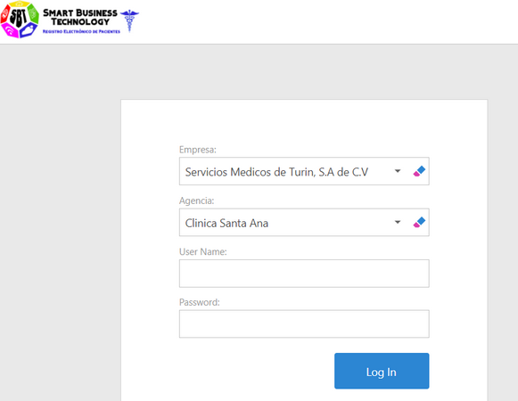

|
<< Click to Display Table of Contents >> Navigation: Inicio del Sistema > Ingreso al Sistema - Web |
Para ingresar a la aplicación, su administrador le indicará el enlace que debe ingresar en la barra de direcciones de su navegador favorito. El vínculo será similar al siguiente: http:\\RegistroClinico. Se sugiere agregue el enlace a los favoritos en su navegador, para evitar digitarlo cada vez que ingresa al sistema. A continuación el sistema le mostrará la ventana de Log In

1.Seleccione la Empresa. Cuando instala la aplicación se crea la empresa por defecto "Servicios Medicos, S.A de C.V". En el primer Log In, se sugiere hacerlo con el usuario Admin, para completar la parametrización del sistema. Deberá ir a Catálogos --> Empresas, modificar el nombre de la empresa y completar la información solicitada con sus propios datos. En los futuros inicios se sesión se mostrará el nombre de su empresa.
2.Despues de seleccionar la Empresa, se actualiza la lista con la información de las unidades, incluyendo las Agencias o Sucursales que correspoden a la empresa seleccionada.
Durante la instalación se crea la "Agencia 1". En el primer Log In que se hace con el Usuario Admin, debe completar la información de las Agencias, que en este caso corresponden a los consultorios. Para modificar el nombre de "Agencia 1" por su consultorio, debe ir a Catálogos --> Empresas --> Unidades (pestaña), dar clic en la acción Editor, seleccionar "Agencia 1", dar clic en la acción Editar y digitar el nombre del consultorio en la caja de texto Nombre. Puede agregar aquí otros consultorios o unidades de la empresa.
3.Digite su nombre de usuario en la caja de texto User Name.
4.A continuación digite su Password. Sí es la primera vez que se conecta, es posible que su Administrador haya configurado su cuenta para que usted pueda crear la contraseña la primera vez que se conecta. Ingrese una contraseña, siguiendo las reglas que se han definido en las políticas del Instituto. Recuerde que necesitará la contraseña cuando se conecte nuevamente, por lo tanto no debe olvidarla.
5.Dar clic en la acción Log In. Si la contraseña es correcta y cumple con las reglas correspondientes, el sistema le mostrará la página principal, de lo contrario se mostrará el mensaje de error correspondiente.